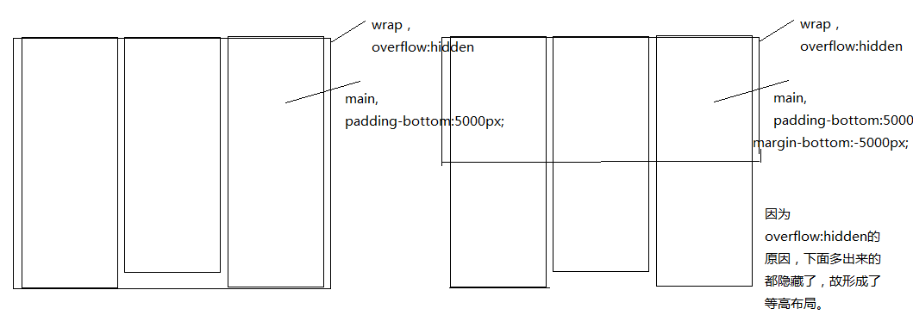

版权信息
Mobydick46@github.com
摘要笔记
从大大们给的资料里所记所得的一些小知识
1-可以为元素的内边距padding设置百分数，其数值为元素的父元素的width的百分数。内边距的四个属性都是以父元素的width百分数。 2-在鼠标移入时元素时边框出现，但不会改变尺寸，则可以先设置边框并将颜色设置成transparent。 5- box-sizing: border-box; 这是css3的新属性，需要加上前缀，把现在盒模型变成ie6盒模型。 6-在一个div中放一张img，img进行右浮动，此时div不能够撑起，解决办法div { overfollow: hidden; zoom: 1;} 7- 负的margin不会把元素脱离文档流。 8-positin:absolute; 的定位是在父元素的border以内开始。 9-img下经常出现几个像素的下边距，解决办法是将img块级化
关于BFC的一点认识
关于BFC的一点认识，以及在什么地方可以使用
1-块内框在inline formatting context 里格式化，而块框在BFC中格式化。 2-BFC可以看成一种环境，在BFC环境只对处于其内的元素有影响 3-浮动的元素之间不会发生margin塌陷，浮动元素跟其子元素也不会 4-绝对定位的元素之间之内不会发生margin塌陷， 5-产生了新的BFC的元素与其子元素不会发生margin塌陷，比如父级overflow:hidden 6-inline-block 的元素之间之内不会发生margin塌陷 7-同级的元素之间，产生margin塌陷，只要把两个元素分别放入两个有BFC环境的容器就可。 8-hasLayout 可以看成是IE下的BFC，跟BFC的概念很像，就是自成一体的环境，不受外界影响。 9-产生BFC的元素不会跟浮动的元素重叠，经常用于布局之中。
等高布局中overflow的作用
双飞翼布局与圣杯布局中最外围包含块wrap的作用
1-清除中间子元素的浮动，wrap能撑起容器，2-子元素的margin-bottom:-5000px; 把wrap的下边拉回到子元素的内容块底部，此时overflow:hidden 能把wrap下边之外的通过padding-bottom生成的背景色去掉。 
版权信息